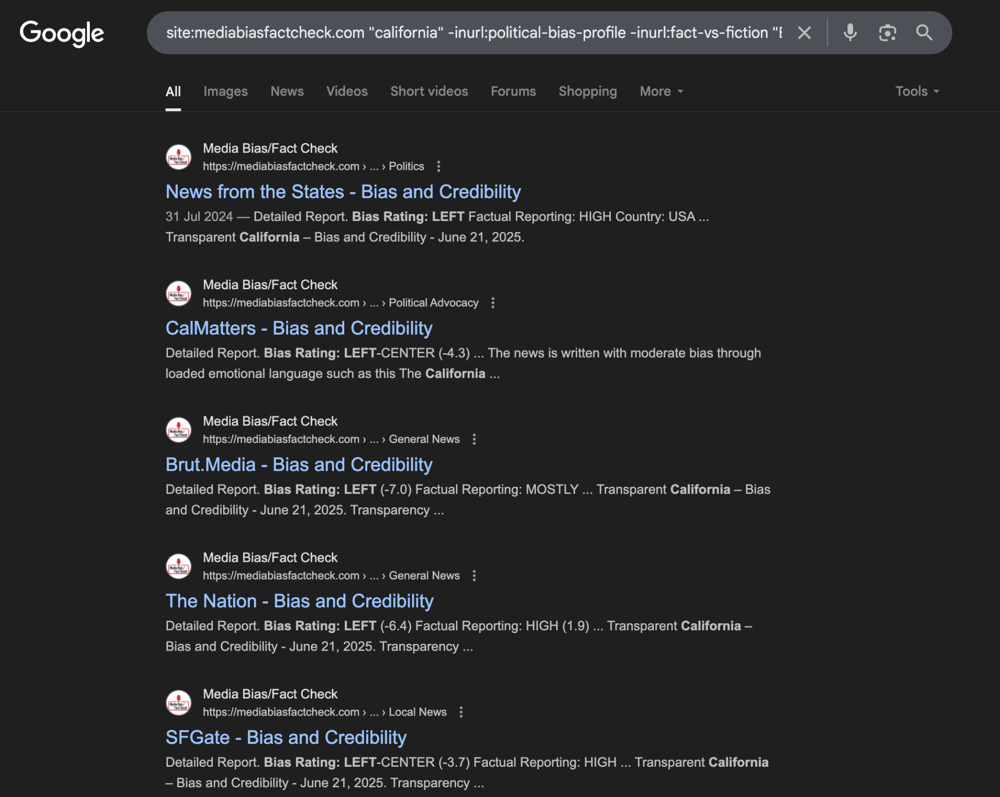
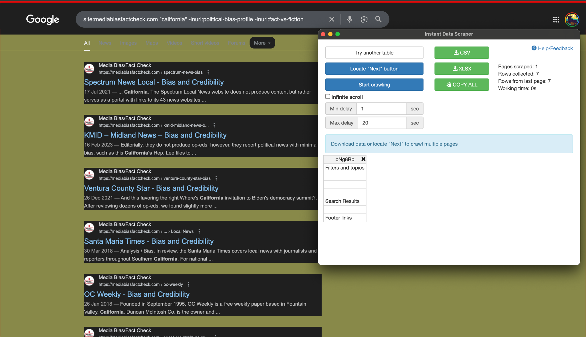

Worksheet · Find · March 2026
Creating a Programmable Search Engine
Prerequisites:
Goals:
Curating thematic source lists to narrow down your search focus.
Learning to create a “custom” search engine to perform more targeted searches.
Introduction
Programmable search engines allow us to control the sources that Google draws from when producing results for your queries. In practice, this means you can trade completeness for precision: instead of searching the whole web, you search a curated set of sources that you have decided are relevant to your investigation.
This is useful in at least three scenarios. First, when you want to reduce personalization: Google's default results are shaped by your browsing history, location, and other signals, none of which are necessarily useful for an investigation. Second, when you want to narrow results to a specific class of sources, such as government portals, academic repositories, or local news outlets. Third, when you want to study a particular information environment, such as understanding what a specific community is saying about an event, by building a search engine that only draws from the sources that community relies on.
The setup process is straightforward, and the following instructions will get you there in a few minutes.
Creating a Google Programmable Search Engine
Step 1: Access the Platform
Sign into the Control Panel using your Google Account
Step 2: Configure Your Search Engine
In the "Name your search engine" section, specify your search engine's name (you can change this anytime)
In the "What to search?" section, add the pages you want to include (see the next section). You can add any site, not just sites you own. You can add whole domains or individual page URLs
Choose between searching your specified sites only or searching across the entire web (with your sites boosted)
Step 3: Create and Customize
Select the language for your search engine (this affects button labels, not search results)
Click "Create" to generate your search engine
Step 4: Implementation
Click "Get Code" to receive the embeddable HTML snippet
Your search engine can be accessed via a Google-hosted public URL (shareable) or embedded as a widget in any website
Once you have generated your Programmable Search Engine, you can see the Public URL in the overview. This is the link you can use to access it anytime. Perhaps it’s a good idea to bookmark it.
Including Specific Sites
From the Control Panel, select the search engine you want to edit. Under Overview, scroll to "Sites to search" and click Add. Enter sites one per line:
Entire domains: example.com or https://example.com
Specific sections: example.com/news/
Individual pages: https://example.com/specific-page.html
URL patterns: example.com/category/* (all pages under that path)
Excluding Specific Sites
Under Overview, scroll to "Sites to exclude" and click Add. Enter sites one per line. Common exclusions:
Entire domains: unwantedsite.com
Content sections: example.com/sponsored/
Platforms you don't want surfaced: facebook.com, twitter.com
Curating sources for your investigation
The set of sources you include is itself an analytical decision that reflects your understanding of the information environment you're investigating and the question you're trying to answer. Therefore, before you start building your list, you need to be clear about one thing: what is the organizing criterion for your search engine? This is the quality or attribute that makes a source worth including. Depending on your investigation, this criterion could be:
geographic scope (e.g. sources based in a specific city, region, or country)
topical focus (e.g. sources specializing in health, environment, financial crime, or labor)
type of outlet (e.g. only local TV stations, only wire services, only independent media)
institutional affiliation (e.g. only official government portals, only university repositories)
audience or community (e.g. sources that a particular political, professional, or demographic group relies on)
quality or methodological standard (e.g. sources that follow a specific editorial or fact-checking standard.
The clearer your criterion, the more useful your search engine will be. Note that you can build several engines with different criteria and run the same query across all of them to compare results. This is actually an investigative technique on its own right, though it may be overkill for most digital investigations (but handy if what you’re investigating is Google itself, for example, how it reproduces biases).
Finding or Building the Right Catalogue?
Once you have a thematic criterion, you need to either assemble a list yourself or find sources that have already been classified. Creating a list from scratch can be extremely time-consuming, and, in most cases, someone has already done the work: there are specialist catalogues, databases, directories, and index services that classify sources in structured, consistent ways. Some examples to get you started:
For editorial standards and fact-checking track records: Media Bias / Fact Check (mediabiasfactcheck.com), AllSides (allsides.com), the IFCN signatories list (poynter.org)
For geographic or language-based coverage: the Wikipedia "List of newspapers by country" pages, EINPresswire regional directories, Reporters Without Borders' press freedom indices
For specialist or niche outlets: professional associations often maintain directories of member publications (e.g. the Society of Environmental Journalists, the Association of Health Care Journalists)
For government and institutional sources: data.gov portals, national open data repositories, EU institutions' publication offices
For academic and grey literature: DOAJ (Directory of Open Access Journals), institutional repository indexes, preprint servers by discipline
You need to be aware of the fact that using someone else’s catalogue implies outsourcing a part of your methodology. It’s ok, it saves time, but you should acknowledge the implications. When evaluating a catalogue, ask yourself: does it classify sources in a way that is consistent and transparent? Does the classification method make sense for my investigation? Is the catalogue itself maintained by a credible institution? These are the same questions you would ask of any source. What is this catalogue likely missing?
Turning a Catalogue into a Query
Once you have identified a useful catalogue, the next step is figuring out how to extract the relevant entries from it efficiently. Many catalogues are not designed for programmatic access, which means you can't simply download a filtered list (i.e. you need links in the format of yoursite.com, and the catalogue is most likely not formatting them like that). But if the catalogue is indexed by Google, you can exploit the structure of its individual entry pages to construct an advanced search query that does the filtering for you.
The principle is simple: look at a few individual entries in the catalogue and identify text strings that appear consistently in entries that match your criterion but not in entries that don't. These strings become the anchors for your query. Combined with a site: operator that limits results to the catalogue's domain and any geographic or thematic qualifier you need, you can pull a surprisingly precise list.
Here is a worked example. Suppose your criterion is: local news outlets in the Netherlands that have been assessed as having a low factual reporting record. You could go to Media Bias/Fact Check, look at a few entries for Dutch outlets classified as low-factual, and notice that every entry includes the string "Factual Reporting: LOW" and that Dutch outlets tend to include "netherlands" in their page content. Based on those observations, you can build a query might look like this:
site:mediabiasfactcheck.com "netherlands" "Factual Reporting: LOW" -inurl:political-bias-profile
The -inurl: operator excludes category pages that aggregate profiles, so you only get individual source entries. Adjust the strings based on what you actually see in the catalogue's page structure, the logic is always the same.
Spend a few minutes exploring your chosen catalogue before constructing the query. Check what terms appear consistently in entries matching your criterion, whether the catalogue uses a URL structure that might interfere with your results, and whether there are any pages you want to explicitly exclude.

Building Your Source List
You now have a set of search results, each pointing to an entry in your chosen catalogue that matches your criterion. The final step is turning those results into a list of source URLs that you can paste into your programmable search engine. You have two options.
Path A: Automated extraction
NOTE: The worksheet recommended before the Instant data scraper, which has since become malware. DON’T DOWNLOAD IT!
Using a Chrome extension, you can scrape the search results page to extract all the catalogue URLs at once. Fire up the extension on your results page, iterate through the available tables until the extension selects the right one (the one containing the search results), and use the "Locate Next button" feature to paginate through all results. Save the output as a CSV and import it into a spreadsheet.

At this point you will have a list of catalogue entry pages, but not the actual URLs of the sources themselves. To get those, you can use a simple Python script in Google Colab (free) that visits each catalogue entry page and extracts the source URL using a Regular Expression — a pattern-matching rule that locates the URL in the page's HTML. Ask a chatbot to help you write this script: give it one or two example entry pages from your catalogue and ask it to identify a regular expression that captures the source URL reliably. Test it on a handful of entries before running it on the full list.
Once you have the full list of source URLs, paste them into your programmable search engine's "Sites to search" field, one per line.
Path B: Manual curation
Good’ol manual write up… Go through the search results you produced with your advanced query. For each result, visit the catalogue entry and then the source itself. Use your knowledge of the subject area, your investigative criterion, and your common sense to decide whether to include it. A source that is technically within your criterion but that you know to be defunct, heavily paywalled, or otherwise inaccessible to your queries is probably not worth including.
You should develop explicit criteria before you start and write them down. Notes like "included because it has the largest circulation in the region" or "excluded because the site is no longer updated" are important for transparency and reproducibility. Aim for a list you can justify and defend.
Record the URLs of the sources you select in a spreadsheet, along with brief notes on why each was included. Then paste the URLs into your programmable search engine.